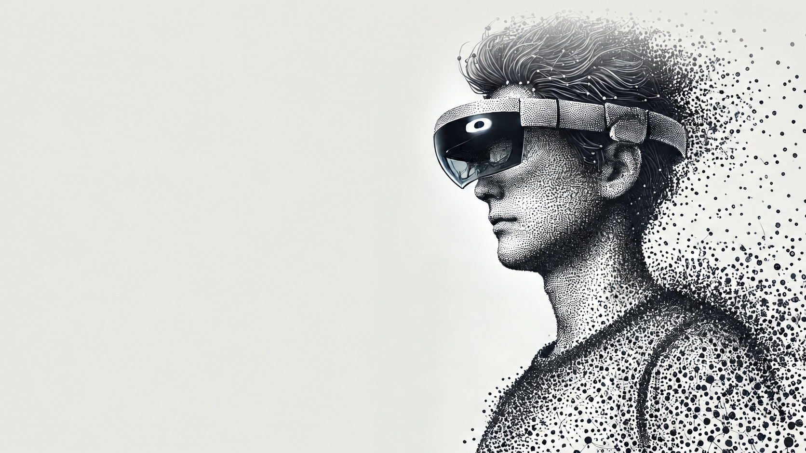

Remote communication, in 3D
AR 3D Call.
Feel closer.
Share a live 3D view of yourself or your surroundings with someone far away. They see it in their own space.
Capture on iPhone / iPad.
View on iOS, Meta Quest or XREAL.

What does a 3D call look like?
See a live capture appear in another person’s space.
What would you like them to see?
Choose a camera for the person, object or place you want to share.
Let them see you in 3D
Share your face, gestures and upper-body movement during a remote conversation. The other person sees your live 3D capture in their space and can move around it.
Requires an iPhone or iPad with a TrueDepth camera.
Show what you’re talking about
Point the rear camera at an object or part of a room. Give the other person a live 3D view of what you’re discussing, including its shape and movement.
Requires an iPhone Pro or iPad Pro with a LiDAR scanner.
The camera captures color and depth. The other person sees a live 3D shape made of colored dots, called a point cloud. Each capture shows the surfaces visible to the camera.
Capture yourself or your surroundings
See the live capture in their space
Connect over the Internet using the same Connection ID in both apps. More than one viewer can join the same stream.
Anyone with the Connection ID can watch. Share it with the people you want to invite.
Start with two devices.
One captures and sends. The other displays the live 3D view. Both need an Internet connection.
Set up the sending device
iPhone / iPad
Install HoloTuberKit on an iPhone or iPad with a TrueDepth camera or LiDAR scanner.
Choose where to view
iPhone / iPad
Use a second iPhone or iPad to see the capture in your room. The same iOS app includes both sending and viewing.
App StoreMeta Quest
View the live capture in AR on Quest 2, Quest Pro, Quest 3 or Quest 3S.
Meta Quest (beta)XREAL Air 2 Ultra
View with XREAL Air 2 Ultra glasses connected to a Beam Pro. Install the APK on Beam Pro, then follow the first-time setup.
Download APKFor existing users: If the 3D view does not display correctly, try updating HoloTuberKit to the latest version on the sending device and all receiving devices.
Check device requirements
| Role | Device |
|---|---|
| Sender (TrueDepth) | iPhone or iPad with a TrueDepth camera. iOS 15 or later. |
| Sender (LiDAR) | iPhone Pro / iPad Pro with a LiDAR scanner. iOS 15 or later. |
| Receiver: iOS | A device that supports ARKit. iOS 15 or later. |
| Receiver: Meta Quest | Quest 2, Quest Pro, Quest 3, Quest 3S. |
| Receiver: XREAL | XREAL Air 2 Ultra (hand tracking is used) with an XREAL Beam Pro. Other Android phones, such as Galaxy, are no longer supported. |
Ready? Follow the send and receive steps below to connect your devices.
Send and receive
1. Sender (iOS)
- Choose a camera.
Open HoloTuberKit and tap TrueDepth or LiDAR under SEND.
See the camera selection screen

Choose TrueDepth or LiDAR under SEND. - Enter a Connection ID.
Use a unique ID. Take care not to use an ID that another user is already using.
- Tap Connect.
Capturing and streaming start. The screen shows how many viewers are connected. Close the app to stop streaming.
See the sending screen

Sending with TrueDepth.
2. Receiver
Choose your viewing device below. Enter the same Connection ID and connect.
- iOS
Tap Receiver on the home screen, enter the ID and tap Connect.
See the view in AR

The live capture appears in your space. - Meta Quest
Press Connect on the panel attached to your left controller. Type the ID in the window that appears, then press Connect again. Turn Manipulation on to move and rotate the point cloud: grab it with the controller ray, and tilt the thumbstick left or right to rotate it around the vertical axis.
- XREAL
Complete the first-time setup, enter the ID on the Beam Pro screen and tap Connect. Use your hands to move and scale the point cloud.
First-time setup
Only needed the first time you run the app.
-
Allow "Display over other apps".
After installing, launch the app. The Android settings screen for Display over other apps appears. Select HoloTuberKit, turn on Allow display over other apps, then press the back button.

Step 1: select the app 
Step 2: allow it, then go back -
Allow the microphone.
The first time the app starts, a permission dialog appears. Choose While using the app.

Step 3: allow audio recording
Troubleshooting
Connection error
In highly secure network environments (offices, schools, public Wi-Fi) the device's IP address cannot be obtained, and the point cloud cannot be streamed. Use tethering from a smartphone, or another network.
The receiver shows nothing
Check that the Connection ID is exactly the same on both sides, and that the sender app is still open and shows Live.